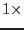

smoothstyle=`withset'.
In this mode, different parts of the image may be smoothed by different convolvers. A list or library of convolvers is required, also an `index' image which shows those parts of the image to be smoothed by each convolver. These are supplied in the form of a FITS dataset, as described in section 7. Separate parameters inconvolversarray and inindeximagearray are provided for the convolver list and the index image, so these may be stored either in the same dataset or in two different datasets. The image inindeximagearray must have the same dimensions as inset, and the maximum value of inindeximagearray must not exceed the number of convolvers in inconvolversarray.
Regardless of the value of withweightset (see section 3.4 for the use of weight and mask images), the convolution within each index `patch' is always a weighted convolution, the weight being 1 (or  the weightset image if this is supplied) within the patch allocated to that convolver and 0 outside it. Likewise, the result of each patch convolution is masked by the patch (ANDed with the outmaskset mask if this is supplied) before being added to the output image. In future a parameter may be provided to allow the user to switch off this patch weighting and masking if desired.
If the user desires the convolvers to be normalized, the normalizeset parameter should be set.